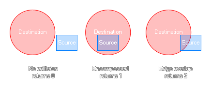

Esta función verificará un área rectangular que usted define para ver si no está en colisión, completamente dentro de los límites del destino, o si simplemente está tocando, un área circular definida. Si no se tocan en absoluto, la función devolverá 0, si la fuente está completamente dentro del destino, devolverá 1, y si simplemente se superponen, devolverá 2. La siguiente imagen ilustra esto: 
rectangle_in_circle(sx1, sy1, sx2, sy2, x, y, rad);
| Argumento | Descripción |
|---|---|
| sx1 | La coordenada x del lado izquierdo del rectángulo fuente. |
| sy1 | La coordenada y del lado superior del rectángulo de origen. |
| sx2 | La coordenada x del lado derecho del rectángulo fuente. |
| sy2 | La coordenada y del lado inferior del rectángulo de origen. |
| x | La coordenada x del centro del círculo. |
| y | La coordenada y del centro del círculo. |
| rad | La coordenada x del segundo lado del triángulo para verificar. |
Real
inst = instance_nearest(x, y, obj_Bullet);
if instance_exists(inst)
{
if rectangle_in_circle(inst.x - 5, inst.y - 5,
inst.x + 5, inst.y + 5, x, y - 25, 20) > 0
{
hit = true;
}
}
El código anterior utiliza el rectangle_in_circle función para verificar una colisión dentro de un área circular y el rectángulo alrededor de una instancia encontrada. Si hay una colisión (ya sea una superposición de bordes o se abarca), se establecerá una variable en true.